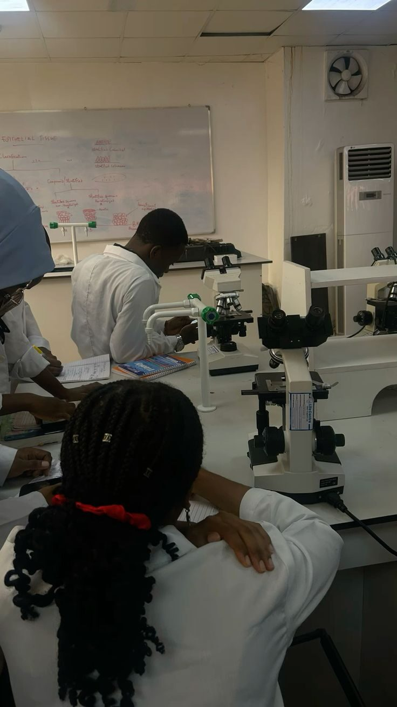
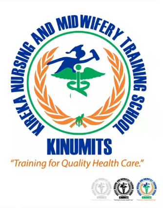

KINUMITS trains Enrolled Nurses, Midwives, Geriatric Care Assistants and Sonographers along Sentema Road — every programme paired with supervised clinical rotations at China‑Uganda Friendship Hospital, Naguru.

Second-year nursing students, microscope practicals.
Six reasons students choose Kireka over the alternatives.
Namatiiti Zone, Kireka Ward — just off the Northern Bypass at Masanafu Flyover, about 7 km from Kampala.
Hands-on placement at China-Uganda Friendship Hospital, Naguru — not simulation-only training.
Semester-based payment structure with a clear, published fee breakdown — no hidden costs.
Led by Principal Nakibuuka Leticia Kabenge under Director Ssedyabane Henry Kabenge.
Licensed by the Uganda Health Profession Assessment Board and listed with the Ministry of Education.
No trip to campus needed to start — fill the form, get a reference number, we take it from there.
Every programme runs two and a half years and pairs classroom instruction with supervised clinical practice.
Foundational patient care — vitals, wound care, medication administration, ward procedure.
Maternal and newborn care from antenatal through postnatal practice.
Specialised care training for Uganda's growing elderly-care sector.
Diagnostic ultrasound imaging, preparing students for radiology support roles.
See full entry requirements and a curriculum breakdown for each programme.
Every KINUMITS student completes supervised clinical rotations at China-Uganda Friendship Hospital in Naguru, giving every graduate real hospital-floor experience before certification — not just lecture-hall theory.
See our placement structure
UHPAB Licensed MoES ListedFill the form, get your reference number, and our admissions line follows up on WhatsApp.
Apply now